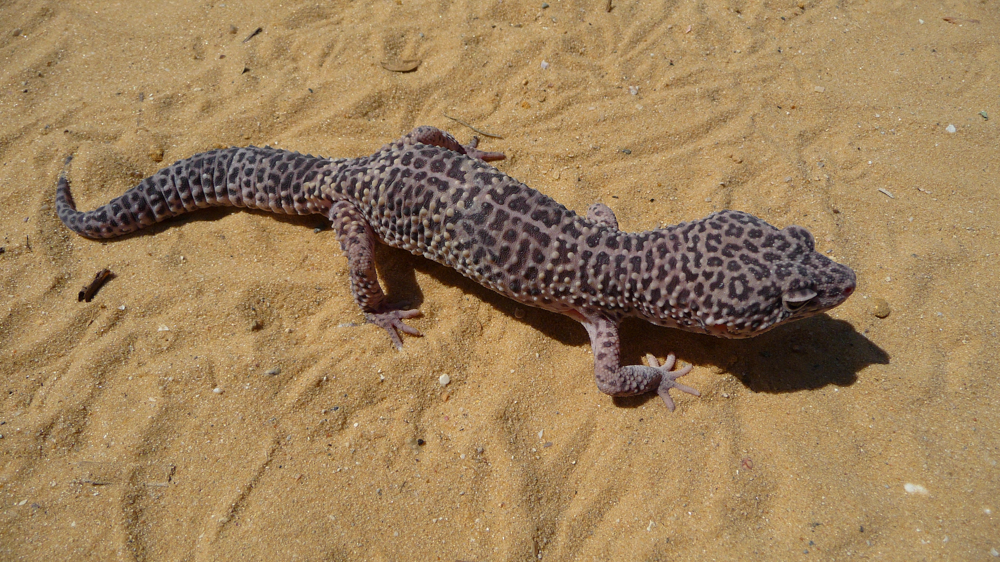

Sprawdź wiedzę i przećwicz ustawianie terrarium. Wszystkie oceny opierają się na tych samych danych, co karta gatunku — jedno źródło prawdy, każda odpowiedź z wyjaśnieniem i linkiem do źródła.

Foto: G. Chernilevsky · domena publicznaRozpoznaj tę jaszczurkę:
Ponad 12 scenariuszy w losowej kolejności. Kliknij „Dobrze” lub „Źle” — po odpowiedzi zobaczysz wyjaśnienie i źródło. Wynik tylko lokalnie.
Wyniki zapisywane wyłącznie lokalnie na tym urządzeniu — bez kont i rankingów.
Gatunek: Gekon lamparci · oceniane wg danych z karty gatunku
Ten sam zestaw norm zasila kartę gatunku, quiz i symulator — zmiana danych w jednym miejscu (plik dane.js).